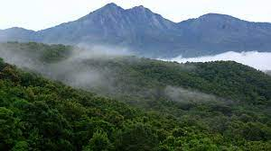

Silent Valley National Park
Silent Valley National Park is a national park in Kerala, India. It is located in the Nilgiri hills and has a core area of 89.52 km2 (34.56 sq mi). It is surrounded by a buffer zone of 148 km2 (57 sq mi). This national park has some rare species of flora and fauna. Silent Valley National Park was explored in 1847 by the botanist Robert Wight.[2] It is located in the border of Mannarkkad Taluk of Palakkad district, Nilambur Taluk of Malappuram district, Kerala, and Nilgiris district of Tamil Nadu.
